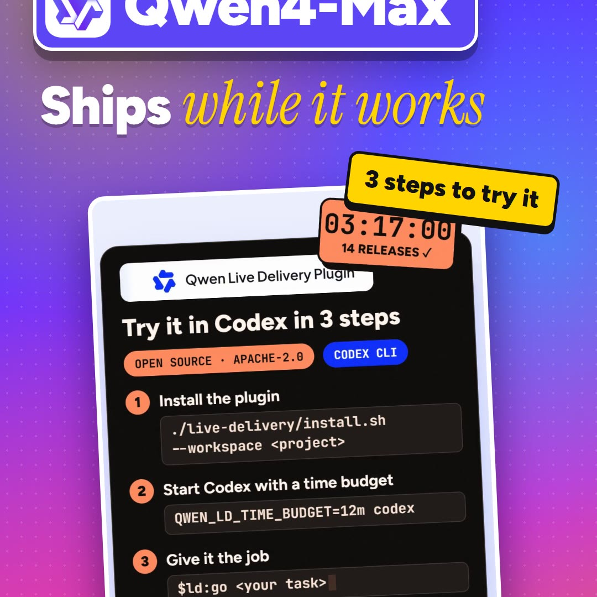

Qwen4-Max Live Delivery: the starter guide
Try Qwen's Live Delivery way of working in Codex today: the agent hands you a working first version early, then keeps shipping while you steer. For anyone who uses a terminal on Linux or macOS.

Quick start
git clone https://github.com/QwenLM/Qwen-Live-Delivery-Plugin.git(get the plugin), thencd Qwen-Live-Delivery-Plugin- Install it into your project:
./live-delivery/install.sh --workspace /path/to/project - In your project, start Codex with a time budget,
QWEN_LD_TIME_BUDGET=12m codex, give it the job with$ld:go [your task], and open the workbench link Codex prints.
What it is
Live Delivery is how Qwen4-Max runs a long task: a usable first version early, then better versions one release at a time, and you can step in at any point to correct it or change direction. Qwen open-sourced it as a plugin, so you can try the same way of working in Codex CLI.
One thing to know first: the plugin brings Qwen's way of working, not the Qwen4-Max model. It runs on your own Codex model and sign-in. To try Qwen4-Max itself, use QwenStudio at https://chat.qwen.ai/.
In Qwen's own demo, a high school physics teacher asked for an interactive physics website with 100 topics. The first version (V1) arrived with 3 of the 100 pages. The run went on to 14 releases in 3h17min of agent work, with 3 messages from the user, one of them steering it mid-run: "The opening lessons are too advanced. Start with the basics of motion…"
Before you start
- Codex CLI, installed and signed in. At launch the plugin works with Codex CLI only (tested with Codex 0.166.0 and 0.167.1). It installs into Codex; it does not install Codex for you.
- Linux or macOS, and Node.js 22+. Windows is not on the list at launch.
- Git, to get the plugin.
- What it costs: the plugin is free and open source (Apache-2.0, version 0.1.0). The work runs on your own Codex model and sign-in, with no model or API key included, so the time it runs counts against your Codex plan or API usage. A long time budget means a long run.
Step 1: Get the plugin
git clone https://github.com/QwenLM/Qwen-Live-Delivery-Plugin.git(Qwen's repository)- Go into its folder:
cd Qwen-Live-Delivery-Plugin
Step 2: Install it
- Run the installer with your project as the workspace:
./live-delivery/install.sh --workspace /path/to/project - Press Enter. It installs the plugin, sets up its hooks and opens Codex. If Codex was already open, start a new session.
- Only install, without opening Codex: add
--install-only. - Check the install:
./live-delivery/install.sh --doctor - Or let Codex install it. Give Codex the plugin's folder and ask:
Read /absolute/path/to/Qwen-Live-Delivery-Plugin/README.md and follow its installation skill to install and verify the plugin. Use /absolute/path/to/my-project as the workspace.
Step 3: Start Codex with a time budget
cd /path/to/projectQWEN_LD_TIME_BUDGET=12m codex- The budget takes minutes, hours or days, up to 7 days. You can change it later from the workbench. Start small: 12 minutes is the README's own example.
Step 4: Give it the job
- Start your request with
$ld:go. The README's own example:$ld:go Build an offline pendulum experiment. Let me adjust the length, pause the animation, and understand how length affects the period. Make it work on mobile too.
Step 5: Watch it ship, and steer
- Open the workbench link printed in Codex. It shows the plan and every delivered version.
- After the first delivery, pick a version on the right. Open Files to preview or download its files.
- Add requirements on the left. Enter sends; Shift+Enter makes a new line.
- Time budget in the header changes the total time. Stop task finishes it. Delivered versions stay when you stop.
Try these
Start each job with $ld:go. Swap the [brackets] for your own.
$ld:go Build an offline pendulum experiment. Let me adjust the length, pause the animation, and understand how length affects the period. Make it work on mobile too.(the README's example)$ld:go Build an interactive [subject] website for [who it is for], covering [number] topics, one page per topic.(the shape of the request in Qwen's demo)$ld:go Build a one-page website for [my small business] with [the menu, opening hours and a contact form]. Make it work on mobile.$ld:go Build a quiz app that teaches [a topic], [10] questions a round, with a score at the end.$ld:go Turn [expenses.csv] into a dashboard with a chart per month and a total per category.- Mid-run, steer it the way the demo's teacher did:
The opening lessons are too advanced. Start with [the basics]. Move the harder topics to later chapters. - Mid-run, keep it small:
Keep the next version simple: just [the home page]. Add [the rest] in later versions.
Gotchas
- Codex CLI only for now. Other agent tools are on the plugin's to-do list, not done.
- Keep the sandbox on. Browser tasks run in the
workspace-writesandbox by default. SettingQWEN_LD_TASK_SANDBOX=danger-full-accessturns off the sandbox and per-command approval; the installer never does this for you. - The workbench link gives access to your task: keep it private, and use it on a network you trust. For local access or SSH forwarding, set
QWEN_LD_BIND_HOST=127.0.0.1before starting Codex. - Delivery times are estimates, and stopping waits for the current tool to finish.
- To remove it, finish any running task, then run these two. Your workspaces and delivered versions are kept.
codex plugin remove ld@live-delivery-local --jsoncodex plugin marketplace remove live-delivery-local --json
Qwen4-Max itself
- Available on QwenCloud, with the Token Plan or the API, and in QwenWork, Qoder and QwenStudio.
- On Qwen's own Work360 test, the average cost per task fell from $4.43 to $1.67 compared with Qwen3.8-Max (Qwen's figure).
- A 2.4-trillion-parameter model with native vision and a one-million-token context window (Qwen's launch post).
Links
- Qwen's launch post: https://qwen.ai/blog?id=qwen4-max
- The Live Delivery plugin: https://github.com/QwenLM/Qwen-Live-Delivery-Plugin
- Qwen4-Max on QwenCloud: https://www.qwencloud.com/models/qwen4-max
- Token Plan: https://docs.qwencloud.com/token-plan/overview
- API: https://docs.qwencloud.com/developer-guides/getting-started/introduction
- QwenWork: https://qwenwork.ai/
- Qoder: https://qoder.com/
- QwenStudio: https://chat.qwen.ai/
Save it
- qwen-live-delivery-guide.pdf 408 KB